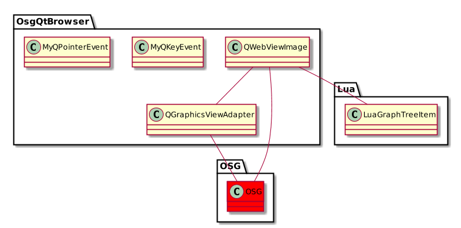
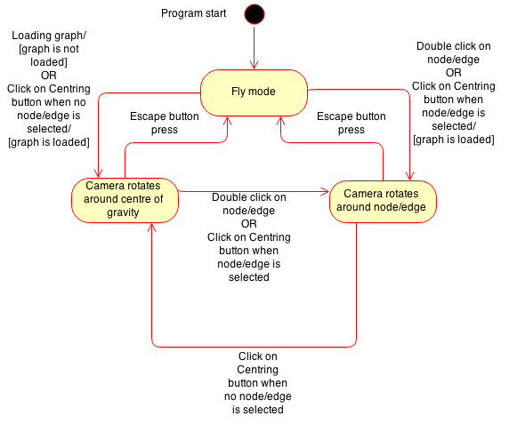

UML diagramy¶
Structural¶
Class Diagrams¶
AppCore:
ArucoModul:
Clustering:
Importer:
Kinect:
Lua:
Manager:
MathModul:
Model:
Noise:
OpenCV:
OsgQtBrowser:

QOpenCV:
Util:
Behavioral¶
Activity diagrams¶
Use-case diagrams¶
Statechart diagrams¶
Camera Movement:
Object diagrams¶
Graph structure layer0:
Graph structure layer1:
Graph structure layer2:
Graph structure layer3-Node:
Graph structure layer3-Edge:
Graph structure layer3-handsGroup:
LeapAR Adapter:
Api leap library:
Navrh modelu ruky layer0:
Navrh modelu ruky layer1:
Implementovany model ruky :

Volania pri update ruk v scene pri LeapAR:
Mapovanie ruk a update pozadia pri LeapAR :